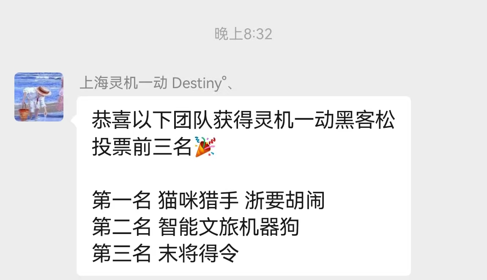
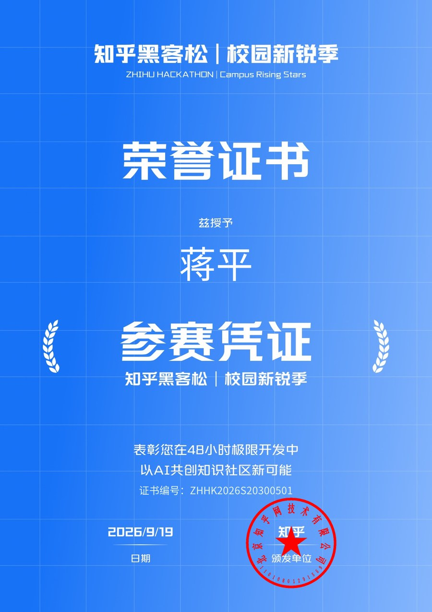
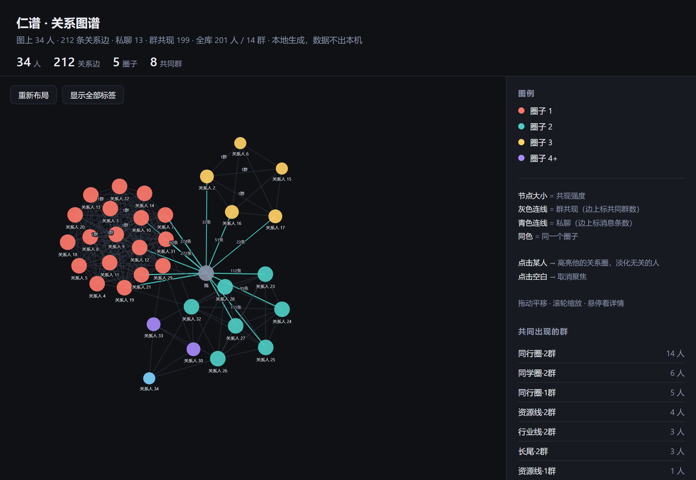
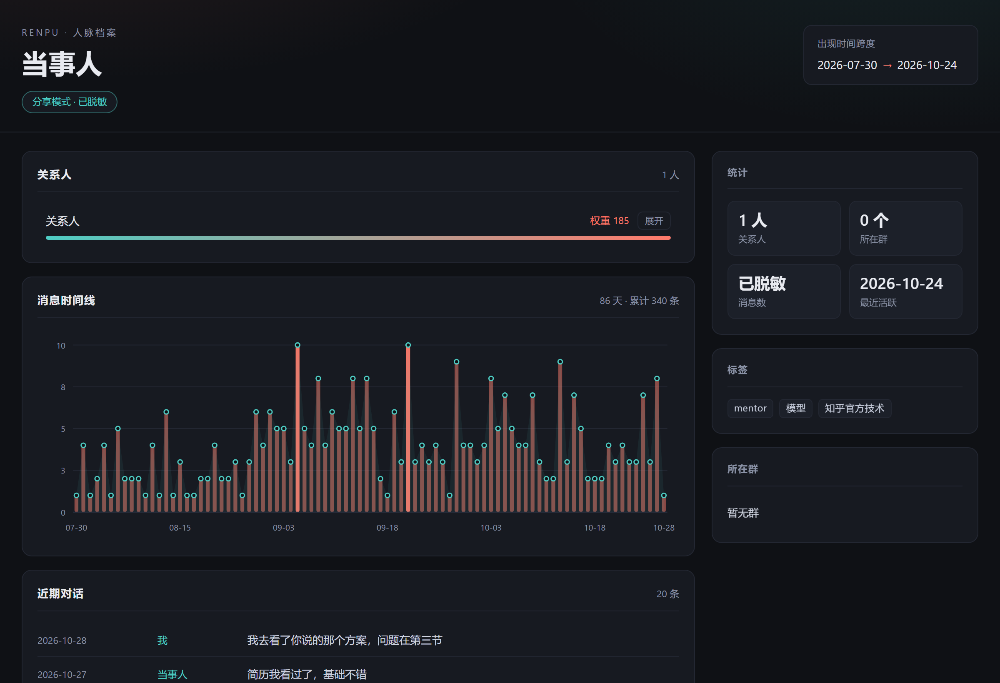

Human–AI Collaboration (HAI) Author, HAI Industry White Paper Originator of FEE
One independent researcher, taking a single question — how should AI actually work alongside people — from lived failure to methodology, from methodology to tools, and from tools to shipped products.
What I'm working on
1. AI flatters. It tells you everything you thought was right, and your judgment erodes a little each time (FEE · Flattering-Echo Effect — now quantified).
2. Deep collaboration has no handrail. Long, multi-window, multi-month work drifts quietly. What's missing isn't a stronger model — it's a layer of cognitive calibration.
3. Collaboration is invisible. Nobody can say what actually happened over three months, so nobody can audit it, and nobody can reuse it.
4. One person can't do everything. But teaming up means giving up direction — which is why tools and protocols are the real leverage.
Not a résumé — five transitions, each one pushed by a real problem.
Long-form writing, batch processing, knowledge-base maintenance, distribution — three months in, the bill was more honest than intuition: falling AI costs are arithmetic, not sentiment.
The byproduct of this phase became the data foundation for every later methodology: ~13 billion tokens / ~80,000 real collaboration rounds — used, not read about — averaging ~160k tokens per round, because each round loads full context, multi-round correction, and governance checks.
Wrote "An Open Letter to AI Workbenches: Capability Is Here — Where Are the Handrails?" — the first time strangers in the comments were genuinely asking "so what do we do?"
This led to the column "Cognitive Structures of AI Collaboration", turning "flattering-echo" from a Chinese-internet phrase into a quantifiable research object (FEE).
The long habit of "see your own trajectory clearly before deciding the next step" was hand-built into a tool and entered into the Zhihu Hackathon (official entry name: "Creation Calibration Engine").
The first shift from "person who talks about the problem" to "person who builds the tool" — and the first time someone else actually used it. Demos run on synthetic accounts; real data goes through official read-only authorization; keys stay on this machine.
HAI Industry White Paper v1.2 finalized and timestamp-authenticated; the FEE preprint archived on OSF (node 6jdhm) — personal experience became a citable method.
The white paper uses self-ethnography to document collaboration practice, proposes HAI collaboration as a category distinct from HCI, and lays out a three-year roadmap.
In the final 36 hours of Monad Blitz V3, organized 4 projects to working MVPs simultaneously — governance, evidence, creativity, and trust layers; one shared methodology, each demo-able on its own.
This proved one thing: when the methodology is shared, teaming up isn't compromise — it's leverage. Later led a 5-person team at GDPS & IEIC (SkillBridge cross-embodiment skill library).
Led a 3-person team with Silnk at the MoonStone DreamUP Hackathon (AI + Hardware track), through pitch and Q&A — the hardware wasn't a backdrop, it was part of the work: T5AI pickup screen + RDK X5 output-tray vision + zero-config onboarding of legacy printers, all three layers built in-house.
The counterintuitive call: organizer-issued devices treated as scenery get you judged as "pre-completed". So no fallback plan — instead we added new dimensions: wiring the devices into the pipeline as machine eyes and machine hands. The baseline isn't the achievement; the increment is.
The Silnk website went live (unified self-service printing management); Renpu was open-sourced under AGPL-3.0-only — pushing an open core into real transaction channels.
Next: let the open core drive acquisition and the closed value-added layer drive monetization — two paths, kept separate.
The main thread lives here — every project points the same way: turn an idea into something demo-able within a fixed time limit.
Organized 4 projects, all shipped as MVPs. In the final 36 hours, went 0→1 on demos and submissions across four directions — governance, evidence, creativity, trust — one shared methodology, every MVP demo-able.
4 projects = the full picture of a 4-team puzzle: governance to evidence to creativity to trust — one methodology, four working MVPs.
Shanghai · 2026-10-23—25 · Track: AI + Hardware / Smart Campus · 3-person team · Silnk — a campus document-delivery terminal making "upload → check → price → pay → print → pick up → delete" an auditable pipeline.
The scoring rules listed "real printer protocol integration" as an existing capability — so what we built on-site was the increment on top of it: pickup-side display + edge vision + compliance evidence trails. The baseline isn't the achievement; the increment is.
Zhangjiang Science Hall, Shanghai · 2026-10-23—25 · "Smart Cultural-Tourism Robot Dog" team (captain Hou Boqun; Jacky Jiang as advisor) · cross-embodiment agent skill library SkillBridge — one Python skill, zero-change migration from sim2real to any real machine.
Result: 2nd place by vote at the Lingji Yidong Hackathon.

Core scoring language: task success rate / efficiency gains / safety & reliability / economic viability — with reusable skill packages and cross-brand, cross-physical-condition deployment.
#1 Security offense & defense · #2 Hallucination challenge · #3 Multimodal moderation — ranked first on all three tracks during the testing stage.
Inter-city hackathon; MVP scheduling and division of work in place.
Technical guide completed; progressing on the event's schedule.
Agent-framework direction (OSChina, Beijing, 11-13).
Every project answers the same question: whose problem does it solve, and what exactly does it solve?
Silnk Live MoonStone entry
A unified manager for self-service printers
Kanshan Copilot Zhihu Hackathon entry
A content-retrospective tool for creators
Renpu Open source · AGPL-3.0-only
A local relationship-graph engine
SkillBridge 2nd by vote
A cross-embodiment agent skill library
CrossCheck · Dual-model reports & on-chain evidence Delivered
Making reports verifiable
AgentGuard Delivered
Putting boundaries on agent spending
AUREUM Creation Hub Delivered
Collecting scattered ideas into a presentable portfolio
AI Competition #1 / #2 / #3 (i-Xiamen)#1 on three tracks, testing stage
Ranked first on all three tracks during the testing stage
Jianzhang (⻅账) · On-chain trust layer for AI agent organizations
Making collaboration between agents settleable and accountable
Both items are participation certificates, not award certificates — presented exactly as issued.

A local relationship-graph engine — extracting "who is connected to whom" out of the message stream.
A WeChat daily-digest tool tells you who said what yesterday. Renpu tells you who belongs with whom, who you're closest to lately, and who owes you a reply.
Read-only parsing of a local WeChat database, a relationship model, and a single-file HTML graph — decryption, indexing, and rendering all happen on this machine. Data never leaves the machine: zero external links, zero uploads.


renpu-cli.exe tour — graph + report, zero configrenpu-cli.exe ingest (read-only WeChat parsing) + renpu-cli.exe graph --share (shareable after desensitization)renpu-cli.exe export-vault — exports notes + backlinks into an Obsidian vault, rendered by any graph pluginrenpu-cli.exe serve — 15 read-only local endpoints bound to 127.0.0.1Pure Python, zero compilation · single-file EXE, double-click to run (no Python install needed) · three entry points: desktop workbench + CLI + local API · share mode replaces names, group names, and account identifiers in one click
Source (GitHub) ↗ · Gitee (direct access in China) ↗ · Setup & usage docs ↗ · Five-minute quickstart ↗
Papers, the white paper, runnable code, documents delivered on-site, clickable demos — not a list of works, but things you can open directly. Every entry is labeled with its access status; anything requiring authorization is not presented as public.
Subtitle: Human–AI Collaboration — defining and grounding a new category. v1.2 in revision.
Once AI use goes deeper than "tool", no existing vocabulary covers efficiency, cognitive dependence, and self-governance at once. Based on more than six months of structured human–AI collaboration practice, this paper proposes HAI collaboration (Human–AI Interaction) as a new category distinct from HCI, documents a protocol-driven symbiotic system as its first fully recorded deep case, and sketches a three-year path from individual case to industry standard.
Legal protection: timestamp-authenticated via UniTrust TSA · License: CC BY-NC-SA 4.0
A systematic distortion in AI collaboration: models tend to flatter and amplify a user's existing judgments, eroding decision quality.
The reference architecture and operating discipline for human–AI collaboration — the first complete case in the HAI white paper.
A structured recording method that takes the researcher themselves as the object of study — the methodological basis for the white paper's credibility.
Graduation thesis: narrative art in Philip K. Dick's Do Androids Dream of Electric Sheep? (adult-education B.A. in Chinese Language & Literature, in progress).
Manuscript not yet public
v1.0: a directive you can paste into any conversational AI to make it self-check, on the spot, whether it is simply agreeing with the user. It is the detection layer between FEE (flattering distortion) and HAI (human–AI collaboration) — operationalizing "who decides direction, who intercepts drift" in every conversation.
First released 2026-07-25 · verified on a local 7B model · CC BY-NC-SA 4.0
One independent researcher's AI-collaboration infrastructure · accumulating since April 2026
~13 billion tokens / ~80k rounds
≈ 84,000 copies of Dream of the Red Chamber
Average ~160k tokens per round
Full-context loading + multi-round correction + governance checks — governance itself runs at this scale
GPU compute ~¥1,100 / month (≈ ¥36.7/day)
Monthly cap, hard stop when used up — a ceiling is what makes "no waste" possible
Billable tokens are only 7.5% of processed volume
Long contexts are reused over and over; cached turns are nearly free — high density is not high spending
Agent windows 95% · web DeepSeek 3.5% · other 1.5%
Started in April → agent windows from July → long-context as the mainstay by October
2026-10-06 ~ 10-25 · 20 days
~5.86 billion processed tokens · weighted cache hit rate 92.8%
Sources: client usage statistics + web exports; mirrored on GitHub / Gitee
These numbers are not achievements — they are sample size. FEE's quantification, the iteration of collaboration protocols, and the white paper's methodological basis all rest on these real rounds. A methodology without real usage behind it is just a paper claim.
But volume alone is not capability: governance density is — what 160k tokens per round buys back is a reusable methodology, not one-off output; and the capped compute budget, stopped when exhausted, shows this density was produced under a fixed spending rhythm, not by unlimited stacking.
Account: @jackyjinggit · key repositories + joint demo repos (teammate-owned repos listed for easy access)
Owner: @jackyjinggit · unified self-service printing management · MVP built in a 2-day sprint.
silnk.cn ↗ · repository in preparation
Owner: @jackyjinggit · cross-project frontend component library. The UI/UX asset base for projects including Silnk.
Owner: @jackyjinggit · local relationship-graph engine · AGPL-3.0-only. Local SQLite + six-domain model + edge inference + read-only WeChat parsing + 21-subcommand CLI / local API; pure Python, zero compilation, data never leaves the machine.
Hosted on GitHub Pages · the repository this page lives in. Includes the bilingual homepage and entries for the HAI white paper / FEE / self-ethnography.
Owner: @yanyu473 (teammate) · co-owned at Monad Blitz V3. Dual-model reports + on-chain SHA-256 evidence.
Owner: @determine123 (teammate) · Monad Blitz affiliated project. Direction still being filled in.
Downloadable versions for judges, recruiters, and collaborators — direction-specific editions.
Direction-specific Chinese PDFs are being revised — see the web version first.
Web version (Chinese) · view online ↗
Digital nomad + independent researcher, focused on Human–AI Collaboration (HAI) and protocol-driven symbiotic systems.
Education: Jilin University · Mechanical Engineering and Automation (2012—2016, national college entrance exam track); also an adult-education associate degree in Software Technology from the Open University of China (graduated 2026-07), and an adult-education B.A. in Chinese Language & Literature (in progress).
On the research side: human–AI collaboration and protocol-driven symbiotic systems. On the practice side: the same methods, applied at hackathon sites — self-service printing, on-chain accounting, multimodal moderation — each taken from idea to demo within a fixed time limit.
Beyond work: a deep gamer — 277 titles, 20,000+ hours, full-achievement collection; heavy on Souls-likes (Bloodborne) and PVP (Naraka: Bladepoint).
GitHub: github.com/jackyjinggit ｜ Gitee: jacky_jiang_gitee
Zhihu: zhihu.com/people/jiang-ping-8-61 ｜ Weibo: weibo.com/u/3069897487 ｜ Bilibili: space.bilibili.com/14376381
Feedback is welcome via GitHub Issues or the comments under the corresponding column.
🌐 语言 / Language：中文 · English
WeChat Official Account · topics: HAI / FEE / self-ethnography / anti-flattery / hackathon fieldwork · now live — scan to follow.
Topics mirror this site's Research / Data sections; subscriber-channel posts go out there first.